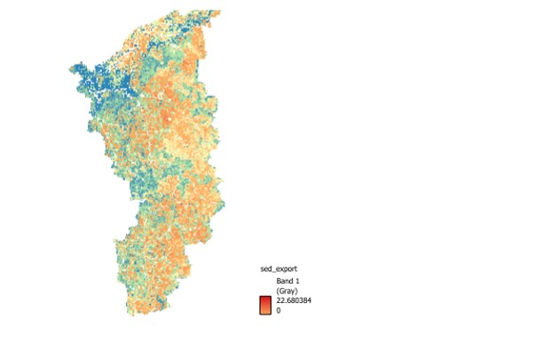

Narmada Landscape Restoration Project
Presented at World Water Week 2024, Stockholm — GGGI.
Seven years turning forest resources and ecosystem science into workable economics — building biomass and non-timber value chains, designing incentive schemes, and financing restoration that pays the communities closest to the land.

The fastest way to keep a forest standing is to make its sustainable use worth more than its clearing. I build the value chains and economics that turn biomass, non-timber produce and forest residues into income for local communities — and a reason to conserve.
I'm an environmental economist who fell for the idea that a forest is worth protecting when the people around it earn more from keeping it alive than from cutting it down.
My path started in an unlikely place — an electrical engineering degree. But somewhere between circuits and systems, I became far more curious about forests, rivers and the communities who depend on them. That curiosity carried me into an MBA in Conservation Management, and then into the field.
For seven years I've worked at the meeting point of ecology, economics and people — scoping forest bio-economy opportunities in the biomass-rich districts of Madhya Pradesh, creating value chains for forest products like lac resin and leaf plates pressed from Butea monosperma, and setting up the business incubation to carry them to market. Today, in Rwanda, I develop bioeconomy programmes and design incentive schemes for wetland and catchment restoration.
I've spent long days walking value chains with forest communities, sitting in district offices negotiating restoration and grassland-management plans, and long nights building the InVEST models and cost-benefit analyses that turn those conversations into numbers a government can fund — and defend. I care about the whole arc: the resource, the value chain that turns it into income, and the economics that makes conservation the rational choice. Gender equality and social inclusion run through all of it, because a value chain only works if it works for everyone in it.
What keeps me going is a simple conviction — that the fairest climate solutions are the ones where the community closest to the land also benefits most from keeping it healthy.
An economist who counts what usually goes uncounted — the value of standing forests, non-timber produce and forest residues — and turns it into income that makes conservation pay.

Biomass and NTFP turned into income and market linkages.
InVEST, CBA and ecosystem-service valuation.
PES and carbon models that reward stewardship.
Budgets, donors and partners, kept on track.
Follow the timeline and open each role to see the work, responsibilities and outcomes behind it.
The technical work that turns forest resources and ecosystem value into evidence decision-makers can fund. Click any image to enlarge it. Upload each file and it appears here automatically.

Mapping non-timber produce and biomass value chains — from resource to market linkage — to build viable, forest-based livelihoods.

Ecosystem-service valuation and cost-benefit analysis assessing whether a scheme can work — and who should pay whom.

Spatial modelling of sediment export and retention to target restoration where it protects water and reservoirs most.

Mapping erosion risk and land-use pressure to prioritise slopes and catchments for restoration.
Click any project to open the full case study — the problem, my role, the approach, and the outcome.
A selection of work presented, authored or led. Full documents are available on request. Replace any "on request" note with a real link once your reports or slides are online.
Open to roles and collaborations across forest bioeconomy, biomass and NTFP value chains, Nature-Based Solutions, valuation and climate finance.
Availability: Based in Kigali, Rwanda · Open to opportunities across forest bioeconomy and climate finance.